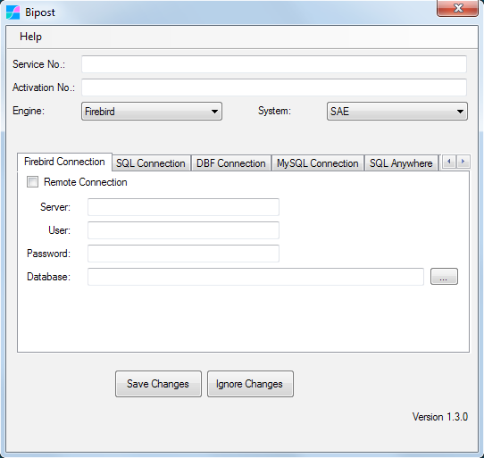

Microsip ERP¶
Microsip es un sistema administrativo ERP que fabrica la empresa Aplicaciones y Proyectos Computacionales S.A. de C.V.
Factor BI ofrece una serie de objetos en MySQL que facilitan la creación de un Business Intelligence.
En nuestro repositorio de GitHub podrás encontrar estos objetos bajo la licencia GNU GPLv3 GNU GENERAL PUBLIC LICENSE Versión 3, 29 de Junio 2007.
Tablas Microsip¶

Al configurar biPost.exe con System: Microsip, de fábrica se incluye un listado de tablas en la sincronización, las cuales son:
agentes
almacenes
anticipos_cc
articulos
atributos
bancos
beneficiarios
cajas
cajeros
centros_costo
ciudades
claves_articulos
clientes
cobradores
comprom_articulos
conceptos_ba
conceptos_cc
conceptos_cp
conceptos_in
condiciones_pago
condiciones_pago_cp
cuentas_bancarias
cuentas_co
depositos_cc
depositos_cc_det
deptos_co
dirs_clientes
doctos_ba
doctos_cc
doctos_cm
doctos_cm_det
doctos_cp
doctos_in
doctos_in_det
doctos_ve
doctos_ve_det
estados
exis_discretos
formas_cobro_cc
formas_cobro_doctos
grupos_lineas
historia_cambiaria
importes_doctos_cc
importes_doctos_cc_imptos
importes_doctos_cp
importes_doctos_cp_imptos
impuestos
impuestos_articulos
impuestos_doctos_cm
impuestos_doctos_ve
libres_articulos
libres_cargos_cc
libres_cargos_cp
libres_com_cm
libres_cot_ve
libres_creditos_cc
libres_creditos_cp
libres_ctas_ban
libres_cuentas_co
libres_devcom_cm
libres_devfac_ve
libres_fac_ve
libres_ped_ve
libres_pol_co
lineas_articulos
monedas
paises
plazos_cond_pag
plazos_cond_pag_cp
politicas_comisiones_vendedores
proveedores
roles_claves_articulos
saldos_ba
saldos_cc
saldos_co
saldos_cp
saldos_in
sucursales
tipos_clientes
tipos_impuestos
tipos_polizas
tipos_prov
traspasos_ba
usos_anticipos_cc
vencimientos_cargos_cc
vencimientos_cargos_cm
vencimientos_cargos_cp
vencimientos_cargos_ve
vendedores
vias_embarque
zonas_clientes
En el siguiente link está el listado de tablas de Microsip.
Tablas Microsip, archivo Google Sheets.
NOTA: La lista del link anterior puede no estar completa.
Para obtener el listado completo de tablas de acuerdo a tu base de datos, puedes usar el siguiente query en Firebird:
select rdb$relation_name
from rdb$relations
where rdb$view_blr is null
and (rdb$system_flag is null or rdb$system_flag = 0)
order by rdb$relation_name;
Añadir tablas a la Sincronización¶
Para incluir tablas adicionales en la sincronización, se utiliza el archivo customData.json, por ejemplo:
[
{
"active": "true",
"table": "ATRIBUTOS",
"fields": "ATRIBUTO_ID, NOMBRE, NOMBRE_COLUMNA, CLAVE_OBJETO, POSICION, TIPO, LONGITUD, ESCALA, VALOR_MINIMO, VALOR_MAXIMO, VALOR_DEFAULT_NUMERICO, VALOR_DEFAULT_CARACTER, DESCRIPCION ",
"join": "",
"filter": "",
"recursiveDateField": ""
},
{
"active": "true",
"table": "UNIDADES_VENTA",
"fields": "UNIDAD_VENTA_ID, UNIDAD_VENTA, CLAVE_SAT, SIMBOLO_SAT ",
"join": "",
"filter": "",
"recursiveDateField": ""
},
{
"active": "",
"table": "",
"fields": "",
"join": "",
"filter": "",
"recursiveDateField": ""
}
]
Los parámetros join, filter y recursiveDateField no están soportados hasta el momento para Firebird SQL.
Observar que puede estar "active": "".
Para más información sobre la configuración de customData.json ver aquí.
Tablas B.I.¶
Al correr los scripts del repositorio de GitHub, se crean las siguientes tablas.
| Tabla | Descripción |
|---|---|
| T | Tiraje de numeración consecutiva. |
| time | Util para usarse con dimensiones de tiempo en el B.I. |
| ym | Util para usarse con dimensiones año y mes en el B.I. |
| biabc | Clasificación ABC de los inventarios. |
| biblia | Matriz de estadísticas de inventario por mes. |
| modulosgrupo1 | Util para un flujo de efectivo. Contiene un resumen de varios módulos del sistema. |
| businessDay | Días laborales de la empresa. |
| customDates | Pasa una fecha específica a las funciones fnSyncDate(), fnAgingDate y fnServiceDate |
| dateInfo | Se llena al ejecutar spPostFinal y se utiliza en diferentes vistas. |
| ymInfo | Se llena al ejecutar spPostFinal y se utiliza en diferentes vistas. |
| syncInfo | Contiene información de la sincronización. |
| logPostInitial | Log de sincronizaciones, se ejecuta al inicio (antes de cargar la data). |
| logPostFinal | Log de sincronizaciones, se ejecuta al final (después de cargar la data). |
| matrixrep1 | Estructura matricial útil para reportes en Google Data Studio. |
| contagrupo1 | Resumen contable por año y mes. |
| contagrupo2 | Resumen contable por fecha. |
| eqtabla | Tabla para agregar equivalencias. |